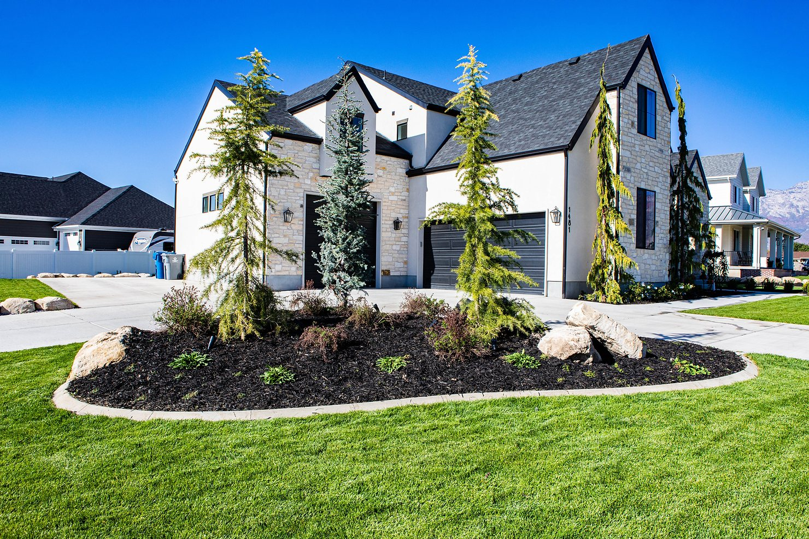

What Is The Best Time Of Year For Landscaping?

The ideal time for landscaping varies based on your location and the tasks at hand. Generally, early spring and fall are preferred due to their moderate temperatures, which provide optimal conditions for plant growth and project execution.
Landscaping is a transformative process that can turn any outdoor space into a beautiful, functional, and enjoyable area. But knowing the best time to embark on your landscaping project can significantly impact its success. So, when is the ideal time to dive into landscaping? Let's explore the prime seasons for creating your dream outdoor space.
At Ironhills Landscaping, we specialize in guiding clients through every step of the process, ensuring your vision comes to life seamlessly. Whether you're planning a lush garden, a tranquil patio retreat, or a sustainable landscape design, choosing the right season with our expertise can make all the difference.
Key Takeaways:
Fall: Best for planting trees, shrubs, and perennials.
Spring: Ideal for planting, garden planning, and site assessment.
Summer: Focus on maintenance tasks like lawn care and pruning.
Winter: Great for planning and preparing for future landscaping projects.
Benefits of Landscaping in Early Spring
Landscaping in spring offers a host of benefits that can enhance your outdoor space and prepare it for the warmer months ahead. As temperatures moderate and plants begin their growth cycle, it's an opportune time to revitalize your landscape. Here are key advantages of landscaping in spring:
Optimal Plant Growth: Spring provides favorable conditions for plant growth, with moderate temperatures and increased sunlight promoting healthy development.
Vibrant Blooms: Many plants bloom in spring, adding bursts of color and beauty to your garden. Choosing flowering plants can create a visually stunning landscape.
Establishing New Plants: Spring allows newly planted trees, shrubs, and flowers to establish strong root systems before the heat of summer, improving their chances of survival.
Preventative Care: Early spring landscaping includes essential maintenance tasks like pruning, fertilizing, and inspecting for pests, ensuring plants remain healthy throughout the season.
Improved Curb Appeal: A well-maintained landscape in spring enhances the curb appeal of your home, making it more inviting and appealing to visitors and potential buyers.
Enhanced Enjoyment: Creating or updating outdoor living spaces in spring allows you to enjoy your garden during the pleasant weather months ahead, maximizing your outdoor living experience.
Environmental Benefits: Landscaping with native plants and incorporating sustainable practices can attract beneficial wildlife, conserve water, and reduce maintenance needs over time.
By taking advantage of spring's natural growth cycle and favorable weather conditions, you can achieve a vibrant and thriving landscape that enhances your home's beauty and functionality.
Fall Landscaping Projects to Consider
Fall is an ideal season for various landscaping projects that can enhance your outdoor space and prepare it for the upcoming winter months. As temperatures cool and nature prepares for dormancy, here are some impactful fall landscaping projects to consider:
Planting Trees and Shrubs: Fall's cooler temperatures create optimal conditions for planting trees and shrubs. This allows them to establish strong root systems before winter, ensuring they thrive come spring.
Lawn Renovation: Fall is perfect for overseeding and aerating your lawn. Cool-season grasses planted in autumn have time to germinate and develop roots before winter, resulting in a lush, healthy lawn in the following spring.
Mulching: Applying a layer of mulch around trees, shrubs, and garden beds in fall helps conserve moisture, insulate roots from freezing temperatures, and suppresses weed growth during winter.
Hardscaping Projects: Fall is an excellent time to tackle hardscaping projects such as building patios, walkways, or installing retaining walls. The cooler weather makes physical labor more comfortable, and completed projects can be enjoyed immediately.
Garden Clean-Up: As plants begin to go dormant, remove spent annuals, cut back perennials, and clear debris from garden beds. This prepares the garden for winter and reduces the risk of pests and diseases overwintering.
Fall Annuals and Bulbs: Planting fall-blooming annuals like pansies or bulbs such as tulips and daffodils in autumn ensures a burst of color early in the following spring, enhancing your garden's visual appeal.
Irrigation Maintenance: Inspect and winterize your irrigation system in fall to prevent freezing and potential damage during winter months. Drain hoses and store them properly to extend their lifespan.
These fall landscaping projects not only improve the aesthetics of your outdoor space but also set the foundation for a healthy and vibrant garden come springtime.
Seasonal Landscaping Tips
Seasonal landscaping tips ensure your outdoor space remains beautiful and healthy year-round, adapting to the changing needs of each season. Here are essential tips tailored to each season:
Spring
Focus on planting and refreshing garden beds. Choose native plants for their resilience and beauty, and prepare the soil with compost for optimal growth. Prune dead branches and clean up debris accumulated over winter to promote healthy new growth.
Summer
Maintain your garden by watering deeply and less frequently to encourage deep root growth. Apply mulch to retain moisture and reduce weeds. Deadhead flowers regularly and monitor for pests and diseases, addressing them promptly to prevent spreading.
Fall
Plant trees, shrubs, and perennials during the cooler temperatures of early fall. This allows roots to establish before winter dormancy. Rake leaves regularly to prevent them from smothering the lawn and use fallen leaves for composting.
Winter
Focus on garden planning and maintenance. Take inventory of tools and equipment, sharpen blades, and prepare for spring projects. Protect sensitive plants from frost and consider winter-interest plants like evergreens or ornamental grasses to add texture and color.
By aligning your landscaping efforts with the unique demands of each season, you can maintain a thriving and beautiful outdoor space throughout the year. Whether you're planting, pruning, or preparing for the next season, these tips ensure your garden remains healthy and visually appealing season after season.
FAQs
When is the best time to plant trees and shrubs?
The best time to plant trees and shrubs is in the fall, allowing them to establish roots before winter.
Can I do landscaping in the summer?
Summer is not ideal for new plantings due to heat stress but is great for maintenance tasks.
What should I do in my garden during winter?
Winter is perfect for planning your landscaping projects and preparing for spring planting.
Why is spring good for landscaping?
Spring offers moderate temperatures and growing conditions ideal for new plantings and garden planning.
How can I maintain my garden year-round?
Adjust your activities seasonally: plant in spring and fall, maintain in summer, and plan in winter.
Achieve Landscaping Excellence with Ironhills Landscaping
Landscaping is an art that thrives on timing and expertise. With the right approach and season, your outdoor space can transform into a haven of beauty and functionality. At Ironhills Landscaping, we are dedicated to turning your landscaping visions into reality. Whether you need design inspiration or expert installation, our team is here to guide you through every step of the process. Let's create a landscape that reflects your personality and exceeds your expectations.
Contact us now to start planning your dream landscape. Let’s work together to make your vision come to life. Call us today to schedule a consultation and take the first step towards a beautiful, functional, and relaxing outdoor space. Your dream landscape is just a call away!
Recent Posts


If you live in Lehi, there's a good chance your yard isn't perfectly flat. Newer neighborhoods near Traverse Mountain, homes along the foothills, and lots that step down toward the street all share th